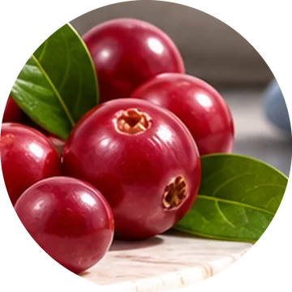
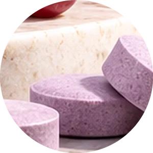
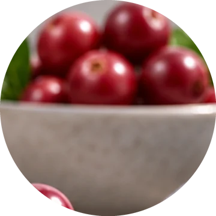
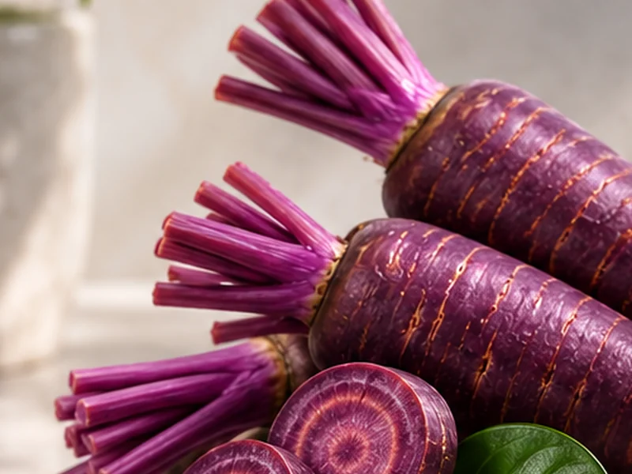
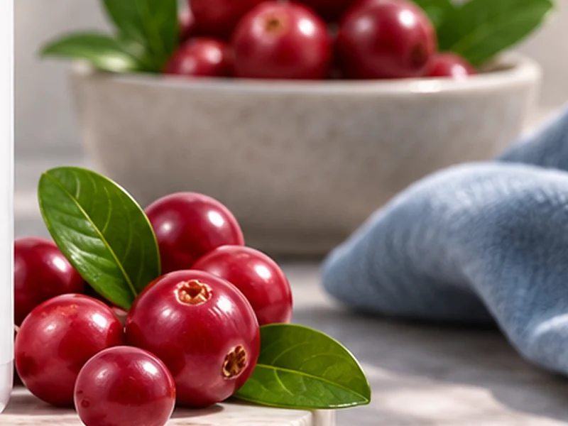
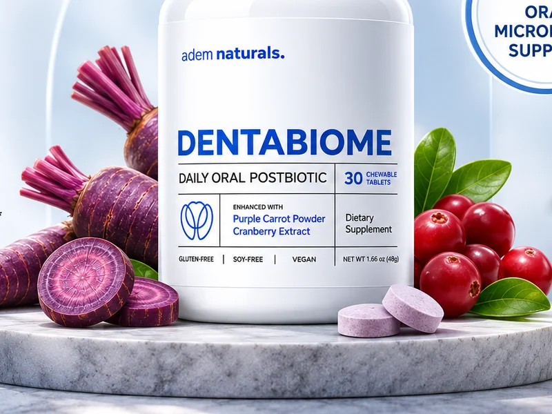
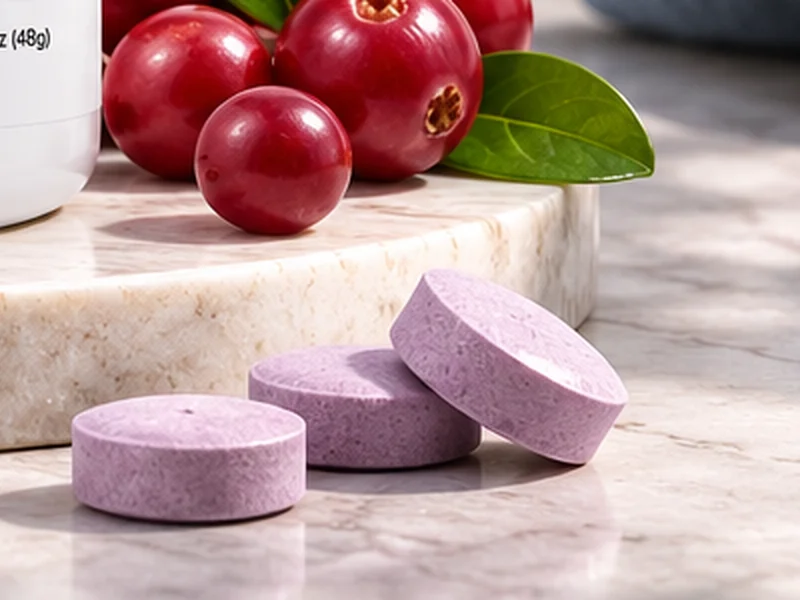
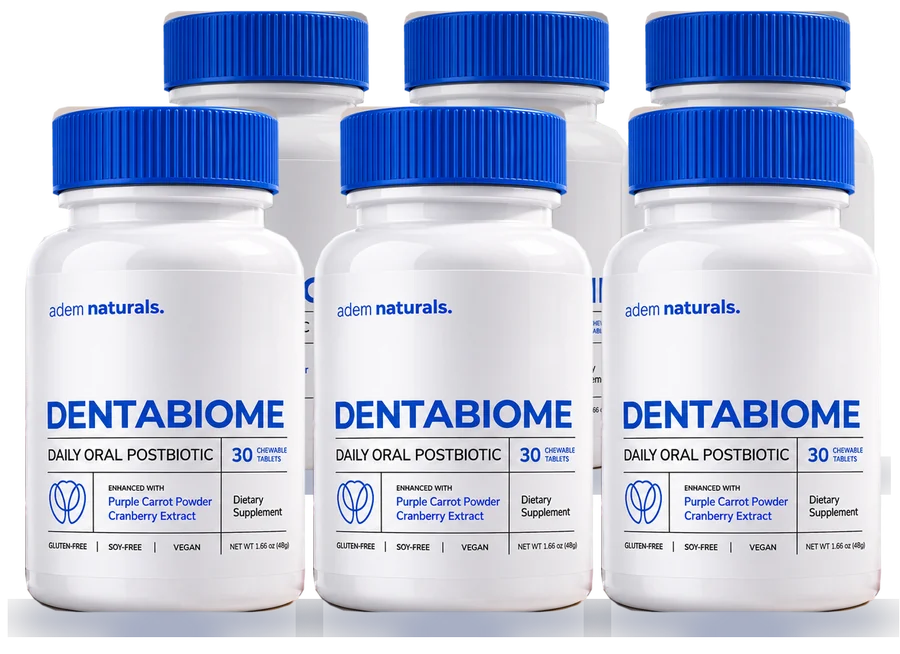
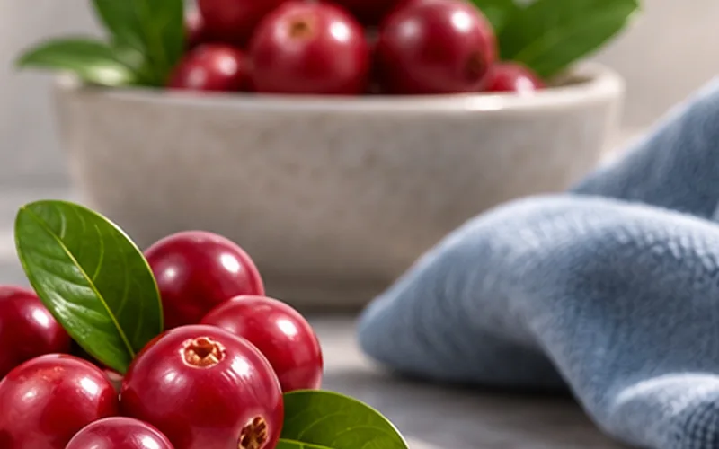
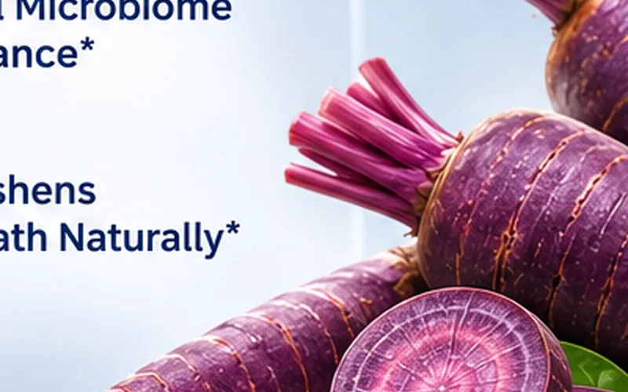

5/5
Self-conscious about her breath in front of her class, she says her breath now stays fresh all day since adding DentaBiome.
Angela D.Age 44 · middle school teacher
DentaBiome brings Lactobacillus postbiotics, xylitol, purple carrot and cranberry together in a Berry Frost tablet you chew once a day. It's an easy, sugar-free addition to the brushing and flossing you already do.





DentaBiome is a daily oral postbiotic dietary supplement in a chewable tablet. Most supplements head straight to your stomach. DentaBiome is designed to work where you chew it: it dissolves slowly in your mouth before you swallow.
Each bottle holds 30 Berry Frost chewables, which is one month at one tablet a day. The formula pairs Lactobacillus-based postbiotic components with xylitol, the BioFresh™ Clean Complex, purple carrot powder and cranberry extract.
It's meant for adults who want a simple, sugar-free extra step for fresher breath and a more balanced mouth, on top of good daily habits.
Your mouth hosts its own community of bacteria. DentaBiome is designed to support that community with one small, pleasant step a day.
A Berry Frost chewable dissolves in your mouth, so the formula is in contact with your teeth and gums, the place it's designed for.
A single tablet a day means there's no rinse to measure, nothing to mix and no extra minutes added to your routine.
The label is marked gluten-free, soy-free and vegan, and the seller adds non-GMO, dairy-free and made in the USA.
DentaBiome is designed to add to brushing, flossing and dental visits. It doesn't replace any of them.
Each focus area has its own page explaining what it is, which ingredients relate to it and the habits that matter most.

Support comfortable, healthy-feeling gums as part of a gentle daily routine.
Explore Gum Comfort →
A Berry Frost chewable designed to leave your mouth feeling fresh and clean.
Explore Fresh Breath →
Lactobacillus-based postbiotics designed to support a balanced bacterial community in the mouth.
Explore Oral Microbiome Balance →
Sugar-free xylitol sweetness that fits a tooth-friendly, low-sugar routine.
Explore Teeth & Enamel Routine →| Product name | DentaBiome |
|---|---|
| Type | Daily oral postbiotic dietary supplement |
| Format | Berry Frost chewable tablet |
| Count | 30 chewable tablets per bottle · net wt 1.66 oz (48 g) |
| Serving | 1 chewable per day |
| Key ingredients | Dual-Strain L. plantarum Complex, L. salivarius, L. rhamnosus, BioFresh™ Clean Complex, xylitol, purple carrot powder, cranberry extract |
| Label claims | Gluten-free · soy-free · vegan |
| Seller notes | Non-GMO, dairy-free, made in USA, GMP-certified, non-habit-forming |
| Guarantee | 60-day, 100% money-back (seller) |
Seven named components, as published by the seller and shown on the label.
Lactobacillus plantarum appears as a two-strain complex. The seller presents it as a core part of the oral postbiotic blend, aimed at supporting a balanced community of mouth bacteria.
A Lactobacillus species named after saliva. It is included in the seller's microbiome-focused blend.
A well-studied Lactobacillus species included alongside the other strains in the blend.
A proprietary blend the seller links to DentaBiome's fresh-mouth feel. Its individual components are not disclosed.
A sugar alcohol sweetener that is common in sugar-free gum and oral care products. It gives the chewable its sweetness without adding table sugar.
Purple carrots get their deep color from anthocyanin pigments. The powder is listed on the front label as a featured ingredient.
Cranberries contain plant compounds called proanthocyanidins. The extract is the second featured ingredient on the front label.
Ingredient names come from the seller's official page and the front label. The seller does not publish individual amounts or strain counts, so we do not list any.
Benefits as the seller positions them, written plainly and without overpromising.
Xylitol and the BioFresh™ Clean Complex are positioned to support a clean, fresh mouth feel throughout the day.*
The Lactobacillus postbiotic blend is designed to support a healthy balance of oral bacteria.*
Formulated to support gum comfort as part of a consistent daily oral care routine.*
Sweetened with xylitol rather than table sugar, so your daily chewable doesn't add sugar to your teeth.
Purple carrot powder and cranberry extract bring naturally occurring plant compounds to the formula.
A pleasant-tasting chewable is easier to remember than another capsule, which helps with consistency.
*These statements have not been evaluated by the FDA. This product is not intended to diagnose, treat, cure, or prevent any disease. See all benefits →
These directions come from the seller. The label on your bottle always takes priority.
Take one Berry Frost DentaBiome tablet once a day, whenever it's easiest to remember.
Chew it thoroughly or let it dissolve slowly in your mouth so it reaches your teeth and gums.
Don't double up on servings. The seller suggests 3 to 6 months of steady use, especially if you're over 45.

A supplement works best on top of good basics. Dental and public health agencies point to the same everyday habits:
Brush for two minutes with fluoride toothpaste, morning and night.
Floss or use interdental brushes once a day to reach where bristles can't.
Saliva helps rinse your teeth, so drink water through the day.
Visit your dentist for regular cleanings and exams.
DentaBiome is designed to fit into this routine as a pleasant extra step. It never replaces these habits or professional care. Build your routine →
Experiences shared on the seller's official page, summarized in our own words.
Self-conscious about her breath in front of her class, she says her breath now stays fresh all day since adding DentaBiome.
After chewing the tablets, she reports her first dental checkup in 10 years without a new cavity.
She says she noticed a change in her gums within about three days of starting DentaBiome.
She had been setting money aside for expected dental work and says she put that budget toward a vacation instead after using DentaBiome.
Customer stories are summarized from testimonials published on the seller's official DentaBiome page. They are individual experiences, are not independently verified by this site, and are not a promise of results. DentaBiome is not intended to treat any dental or medical condition.
out of 5 · seller-reported average
The seller's official page lists an average customer rating of 4.9 out of 5, and every testimonial it displays carries a 5-star score. Here is how the product's verifiable features stack up:
Feature scores are this site's editorial assessment of documented product details (one daily chewable, vegan/gluten-free/soy-free label, per-bottle pricing, 60-day guarantee). They are not customer ratings.
Larger packages lower the per-bottle price, and the 3- and 6-bottle options add free US shipping and two bonus eBooks.
Basic · 60-day supply

$158 total $398
Best Value · 180-day supply

$294 total $1,194
Popular Bundle · 90-day supply

$207 total $597
Bonus eBooks with 3 and 6 bottles: From Dull to Dazzling: Your At-Home Smile Transformation Guide and The Dental Lie Detector: Spotting the Myths That Harm Your Teeth.
The seller backs every DentaBiome order with a 60-day money-back guarantee. If you are not satisfied with your results, you can request a full refund at any time within 60 days of purchase.
According to the seller's FAQ, you return all bottles, even empty ones, to receive the refund. Keep your order confirmation, and contact the seller's customer support listed on your receipt to start the process.
Practical, original articles about the oral microbiome, ingredients and daily habits.

Your mouth hosts hundreds of bacterial species. Here is what that community does and why balance matters.
Read article →
A supplement aimed at your mouth behaves differently from one you swallow whole. Here's what the format changes.
Read article →
Cranberries are known for proanthocyanidins. A careful look at what is and isn't established.
Read article →
Brushing, flossing, water and checkups, plus where an optional chewable can fit.
Read article →
Why purple carrots are purple, what anthocyanins are and why the powder appears in DentaBiome.
Read article →
Most bad breath starts in the mouth. Daily habits that keep it fresh, and when to see a dentist.
Read article →DentaBiome is a daily oral postbiotic supplement in a Berry Frost chewable tablet. It combines Lactobacillus-based postbiotic components, xylitol, purple carrot powder, cranberry extract and the BioFresh™ Clean Complex, and is meant to support a fresh, balanced mouth as part of a normal oral care routine. See the full product overview.
The seller lists a Dual-Strain L. plantarum Complex, L. salivarius, L. rhamnosus, the BioFresh™ Clean Complex, xylitol, purple carrot powder and cranberry extract. The front label highlights purple carrot powder and cranberry extract and is marked gluten-free, soy-free and vegan. Individual amounts are not published.
The chewable dissolves in your mouth, so its ingredients are in contact with your teeth and gums before you swallow. The Lactobacillus postbiotic blend is aimed at supporting a balanced oral microbiome, xylitol adds sugar-free sweetness, and the botanical extracts round out the formula. Read how it works.
Take one Berry Frost chewable per day. Chew it thoroughly or let it dissolve slowly in your mouth. Do not double up on servings, and follow the directions on your bottle's label, which take priority over any website.
The bottle label shows 30 chewable tablets (net weight 1.66 oz / 48 g). At one tablet per day, one bottle is about a 30-day supply.
The seller lists three packages: 2 bottles at $79 each ($158 total), 3 bottles at $69 each ($207 total) and 6 bottles at $49 each ($294 total). The price page has the full breakdown.
Yes. The seller offers a 60-day, 100% money-back guarantee. Its FAQ says to return all bottles, even if empty, to receive a full refund. Contact the customer support listed on your order receipt to start a return.
No. DentaBiome is meant to complement brushing twice a day, cleaning between your teeth and regular dental checkups, not to replace them.
Explore government health resources and published research related to the ingredients and topics discussed on this website.
Explains how plaque bacteria can inflame gum and bone tissue, the warning signs, risk factors such as tobacco, and how dentists diagnose and treat gum disease.
View Official Research → NIH – National Institute of Dental and Craniofacial ResearchUS Government Health ResourceDescribes how mouth bacteria produce acids that wear down enamel, plus causes, symptoms, treatment and prevention of cavities.
View Official Research → NIH – National Institute of Dental and Craniofacial ResearchUS Government Health ResourceCovers the role of saliva in rinsing teeth and keeping them strong, and notes that some sugarless gums and candies containing xylitol may help prevent cavities.
View Official Research → NIH – National Center for Complementary and Integrative HealthNIH Research SummarySummarizes what research does and does not show about cranberry products, along with safety information and other names for the fruit.
View Official Research → NIH – Office of Dietary SupplementsNIH Fact SheetExplains what probiotic microorganisms such as Lactobacillus are, what research says about their effects, who should be cautious, and how to choose a product.
View Official Research → NIH – National Center for Complementary and Integrative HealthNIH Research SummaryReviews how probiotics are regulated in the US and notes that research on many uses is mixed or inconclusive, with safety considerations for vulnerable groups.
View Official Research → U.S. Food and Drug AdministrationFDA Consumer Safety GuidanceWarns that xylitol, found in sugar-free gum and some oral care products, can be dangerous for dogs and should be kept out of their reach.
View Official Research → MedlinePlus – U.S. National Library of MedicineGovernment Medical EncyclopediaExplains that bad breath most often comes from oral hygiene, and can also be linked to foods, medications and some health conditions.
View Official Research → Centers for Disease Control and PreventionUS Government Health ResourceOutlines why oral health matters for eating, speaking and overall wellbeing, and notes that cavities and gum disease are largely preventable.
View Official Research → U.S. Food and Drug AdministrationFDA GuidanceDescribes how the FDA oversees dietary supplements and that manufacturers are responsible for safety and labeling before products are sold.
View Official Research →These references are provided for educational purposes only. They do not represent an endorsement or approval of this product by any government agency. Research on individual ingredients does not necessarily establish the effectiveness of the finished product.
A few other wellness products from our network that readers interested in daily routines often explore.
Gut health supplement
A gut health dietary supplement, a natural companion read for anyone interested in the microbiome.
Explore ProductBlood sugar support supplement
A dietary supplement positioned for healthy blood sugar support routines.
Explore ProductLiver support capsules
Advanced liver support dietary supplement in easy capsule form.
Explore ProductHerbal liquid drops
Alcohol-free herbal liquid drops designed for a simple daily wellness ritual.
Also at: lymphtoneic.com, lymphtounic.com
Explore ProductThese are separate products sold on their own websites. They are not part of the DentaBiome formula and have not been tested together with it.
DentaBiome is one Berry Frost chewable a day, with 30 tablets per bottle, a vegan and gluten-free label and a 60-day money-back guarantee. The 6-bottle package brings it down to $49 a bottle with free US shipping.
A 180-day supply of the Berry Frost oral postbiotic chewable.